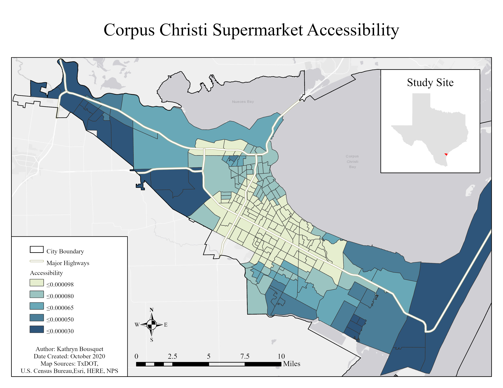

This was my Graduate Creative Project that I completed during my graduate studies. I had decided to
not pursue the thesis track for my masters degree. Instead, I completed this creative project which
was similar to a thesis in everything except length. My graduate advisor helped me find this
opportunity to study the obesity crisis in Corpus Christi, Texas, the city where my university was
located. Per the requirements of the graduate creative project, I wrote a 50-page project report.
Here I will include the report's abstract and most important maps that I created for the
project.
Obesity has increased tremendously over the past four decades. Over 40% of the population in the United States (US) is obese. In 2010, Men’s Health magazine ranked the city of Corpus Christi as one of top ten fattest cities in the US, with five other Texas cities on the list as well. The goal of this project is to analyze the food and physical environment in the city of Corpus Christi. More specifically, the objective is twofold: (1) to measure spatial accessibility of food and physical environment at the block group level, and (2) to determine whether block group level socioeconomic and demographic (S/D) characteristics affect the spatial accessibilities. The food and physical environment is described through four different outlet types including supermarkets, convenient stores, fast food restaurants, and recreational sites. A modified 2SFCA method is adopted to measure spatial accessibility to each of these four different food and recreation outlet types at the block group level. The ordinary least squares (OLS) regression is used to study the associations between S/D characteristics and the food and physical environment at the block group level. For that purpose, the calculated accessibility values at block group level are used as the dependent variable while a variety of S/D datasets pulled from the 2018 American Community Survey database to be used as the explanatory variables. The Central City neighborhood generally experiences some of the highest accessibility of all outlet types, especially Fast Food and Convenience Stores. The total Hispanic population has a significant positive while the median household income has a negative association with the spatial accessibilities to all four outlet types. These findings indicate that neighborhoods with a high percentage ethnic-minorities and poorer neighborhoods have higher accessibility to unhealthy foods. These areas also have higher access of healthy foods and physical activity-promoting facilities. Overall, this project can contribute to the city’s understanding of its food and physical environment and how that may affect obesity.
These maps display the accessibility of each outlet type, calculated using the 2 Step Floating Catchment Area method. The results of this method is an index value given to each block group which is a measure of that block group's accessibility to the given outlet type. The higher this index value, the higher the accessibility.
